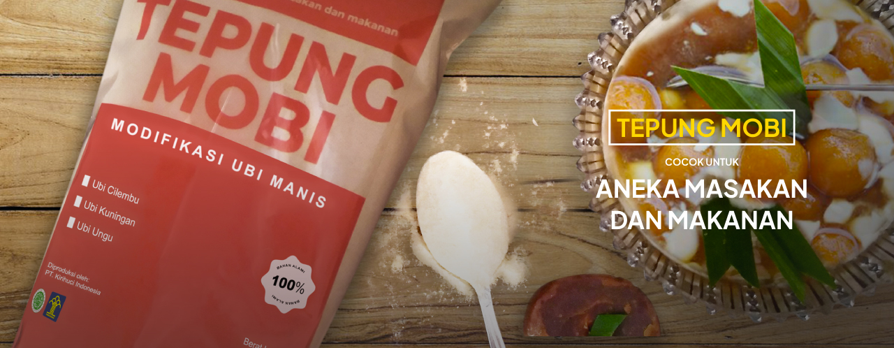

BEST SELLERS
Keripik Ubi Cilembu Kirihuci merupakan produk merupakan produk inovasi ubi khas Cilembu. Keripik ini memiliki tekstur yang renyah, rasa yang menggugah, dan tanpa bahan pengawet. Cocok untuk dijadikan oleh-oleh ataupun disantap bersama keluarga atau kerabat.

Rp. 29.500

Rp. 29.500

Rp. 29.500
INOVASI BARU KIRIHUCI
Ada Inovasi Baru dari KIRIHUCI INDONESIA. Tepung kanji dan tepung modifikasi ubi manis yang terbuat dari ubi Cilembu, ubi Kuningan, dan ubi Ungu. Teksturnya yang lembut dan gak terlalu lengket cocok untuk dijadikan olahan berbagai aneka masakan dan makanan.